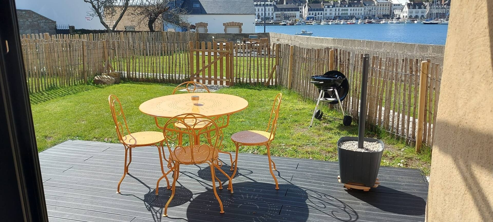
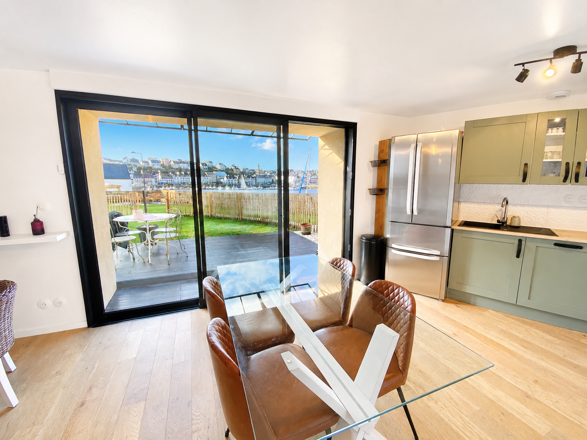
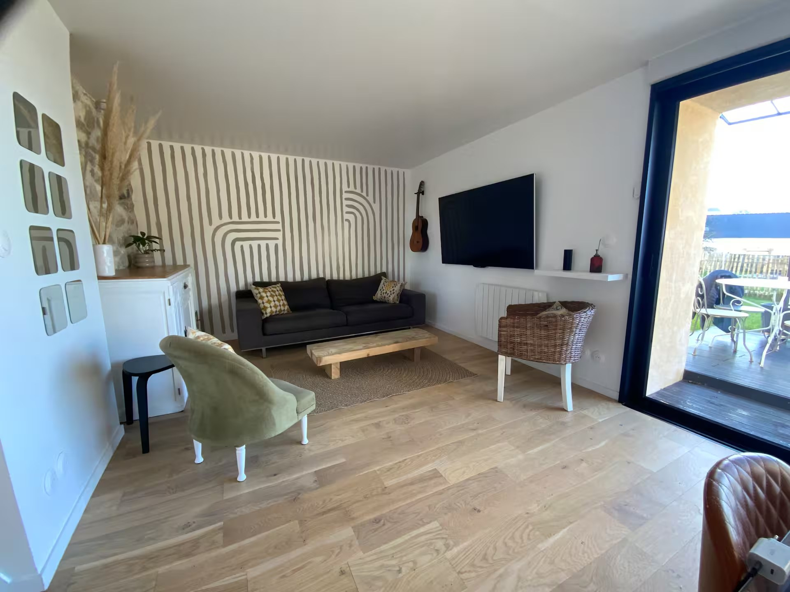
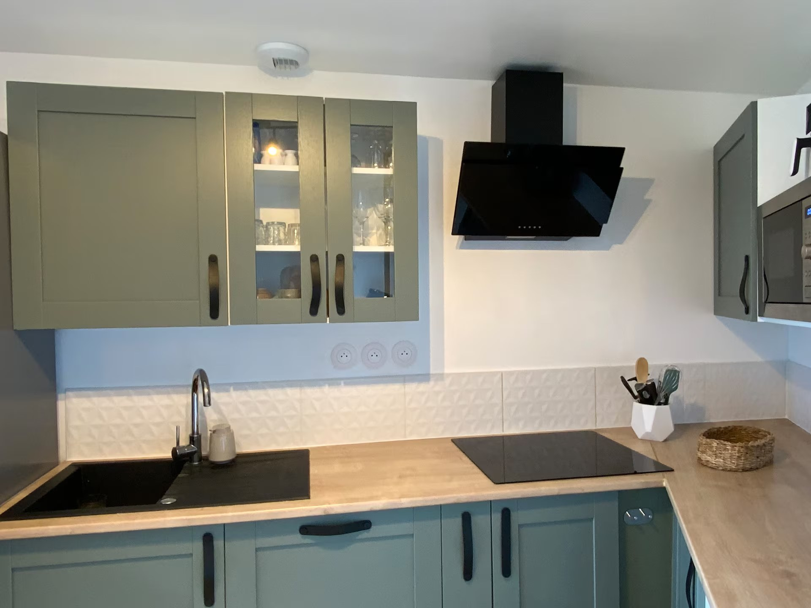
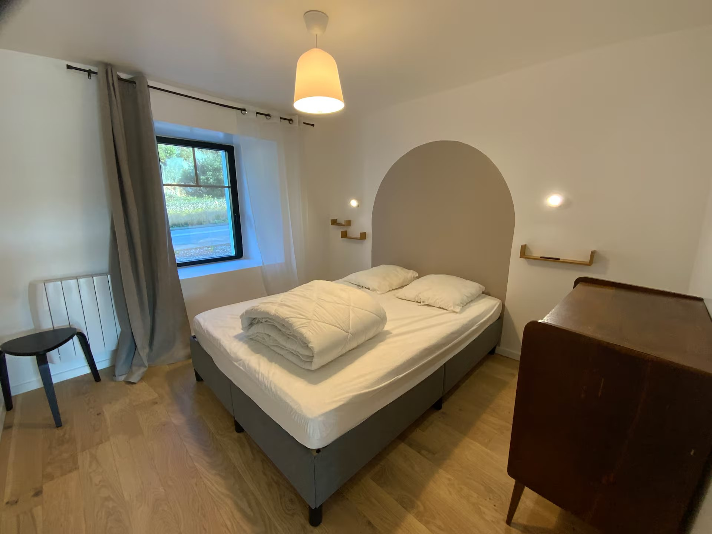
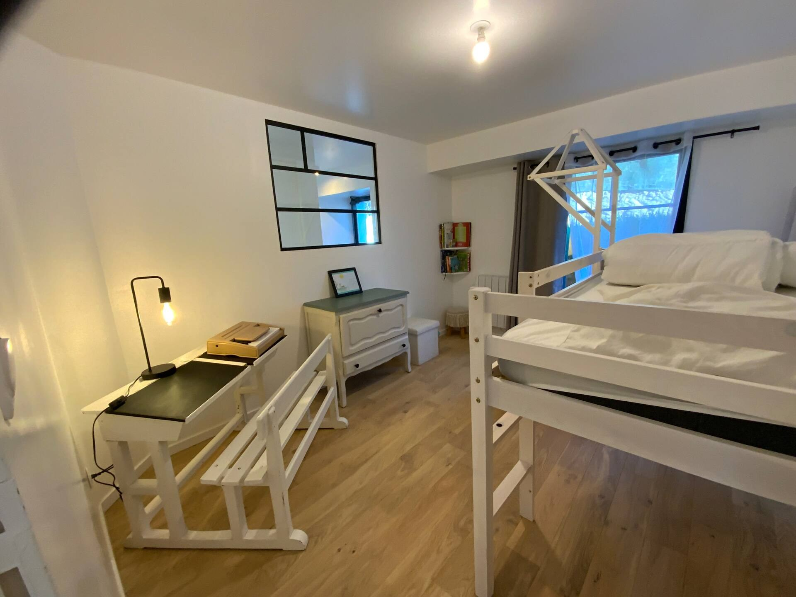
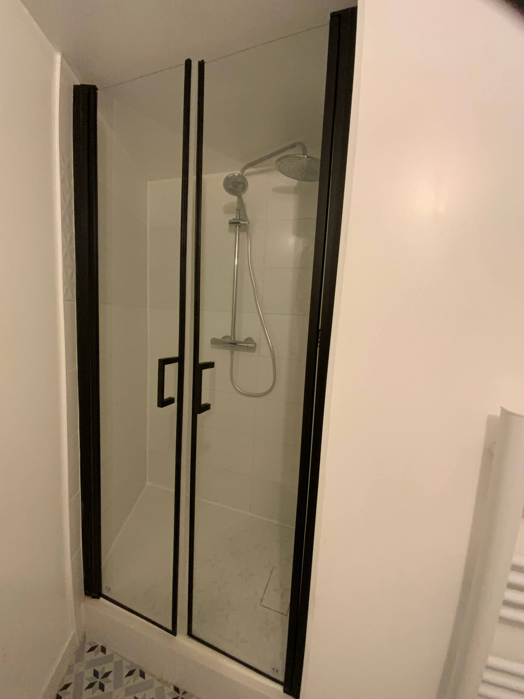
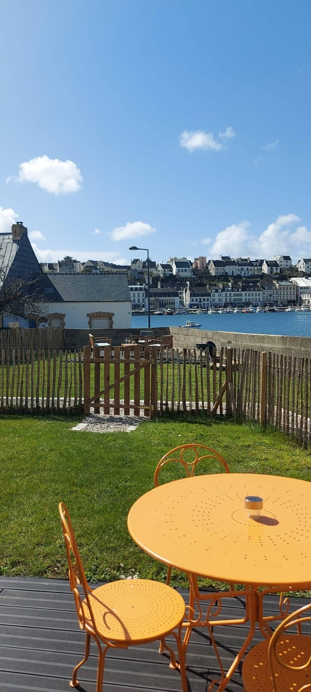
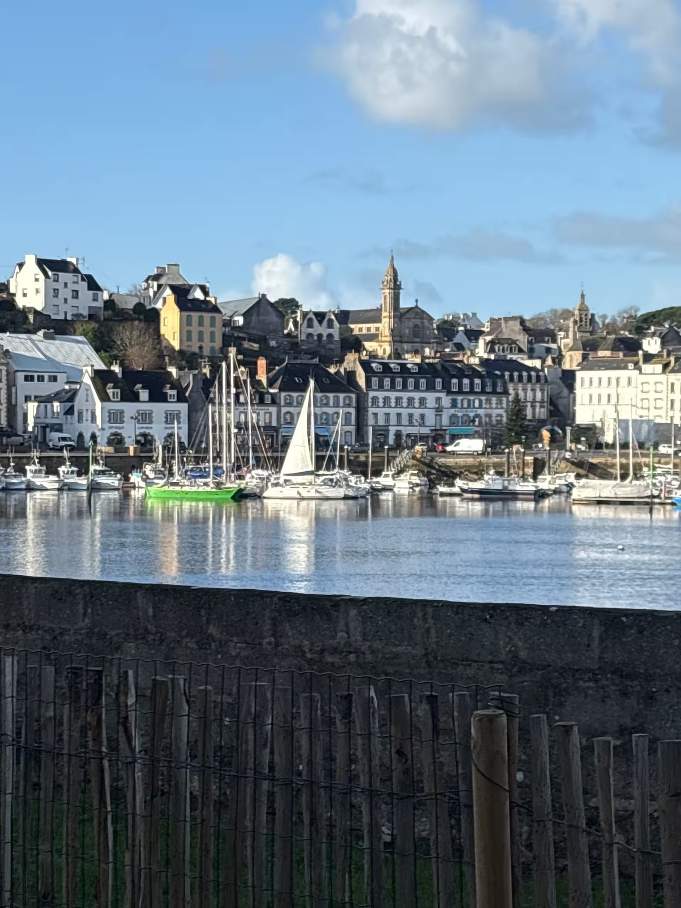

The garden
A real breath of fresh air: breakfast, drinks, reading, children’s games or simply a few minutes watching the harbour.
garden · family · outdoors
A bright, easy-going apartment opening onto a garden overlooking the Goyen estuary, with the harbour of Audierne as a backdrop.

the spirit of the place
Here, the stay often begins outside: coffee in the sun, children playing in the garden, the harbour changing with the tide and the light sliding over the water.
The apartment has been designed for simple, comfortable and easy holidays: a living room opening outdoors, an equipped kitchen, three practical bedrooms and everything you need to settle in for a few days facing Audierne.
This is the apartment most naturally made for outdoor living: ideal for a family, for a quiet stay or for enjoying Brittany without losing touch with the sea.
what we love
A real breath of fresh air: breakfast, drinks, reading, children’s games or simply a few minutes watching the harbour.
The view is never still: boats, tides, morning light, storm skies or a golden end to the day.
Open equipped kitchen with multifunction oven, microwave and dishwasher. Smart TV, fibre internet, dining area opening onto the terrace.
Two bedrooms with large beds, one children’s room, bathroom with shower and washer-dryer. Private parking space.

to the rhythm of the Goyen
Walk to Audierne, head to the beaches, come back with sand in your shoes and end the day outside, facing the water.
In fine weather, the garden naturally becomes the most important room. Out of season, it remains that rare connection with the estuary, the light and the changing weather.
photos & atmosphere
Simple images showing the apartment as it is, while letting the seaside atmosphere breathe.







all year round
In summer, life happens outside. In spring and autumn, enjoy the calm, the light and the walks. Out of season, the garden keeps that direct link with the sea and Breton weather.
see also